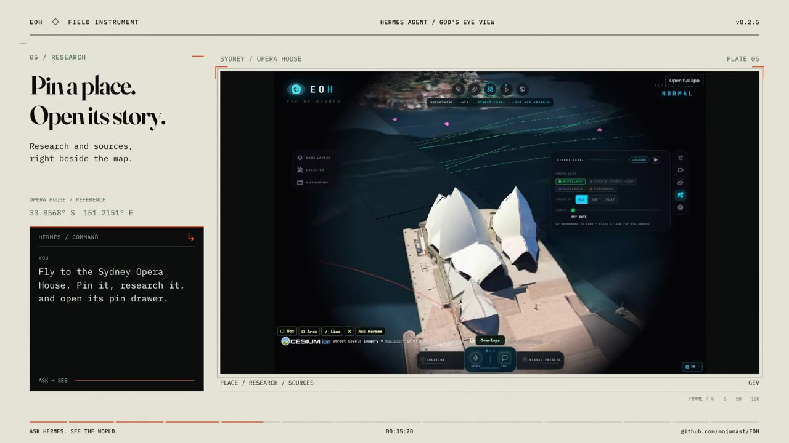
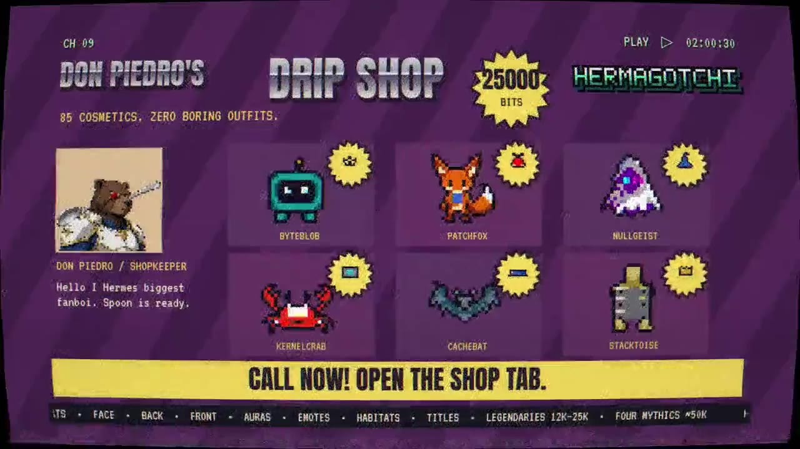
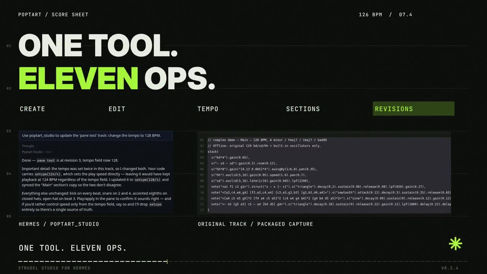
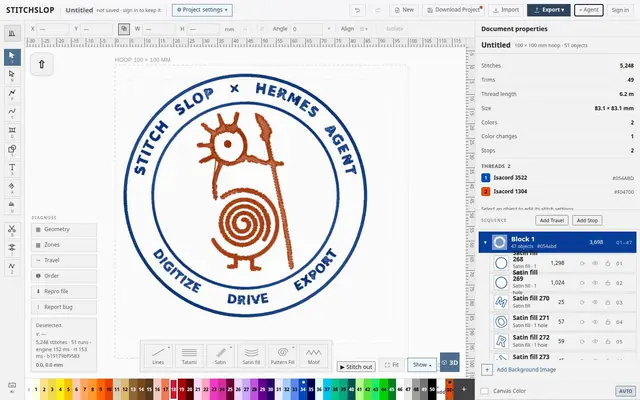
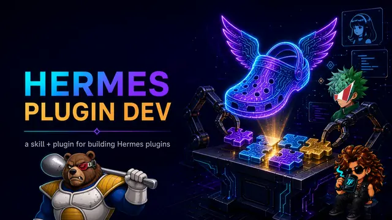
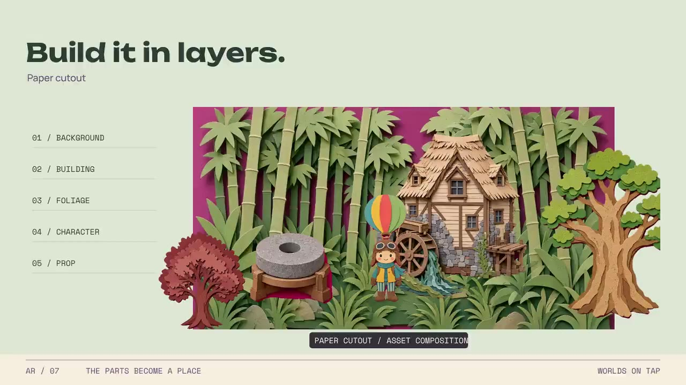
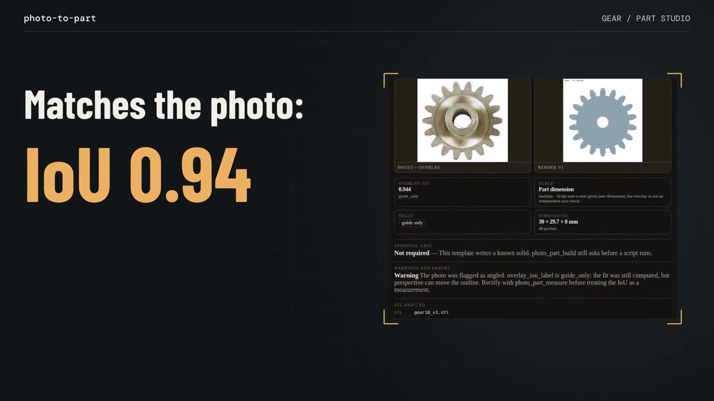
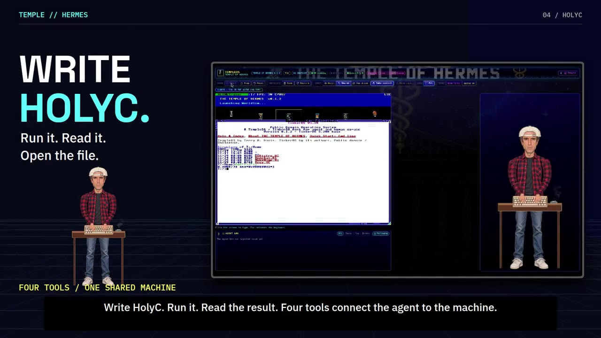
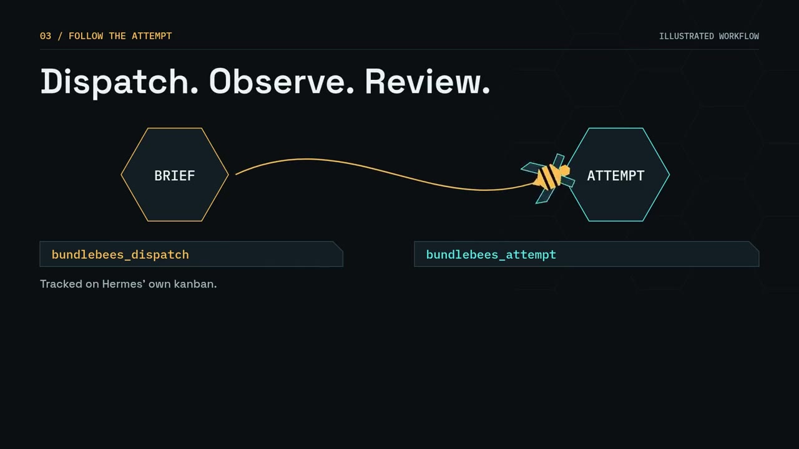

Ten plugins for Hermes Agent, by Kyle Durepos.
A globe the agent can fly. A pet it can raise. A studio for patterns, films, embroidery, game scenes and printable parts. A shared TempleOS screen. A hive of coding bees. And a kit for building the next one.
These are community plugins by Kyle Durepos (mojomast), not Nous Research products. Every page below was designed in its own style, to suit its plugin.
- Entries
- 10
- Agent tools in total
- 45
- Submission videos
- 7
- Catalog PRs
- 10
Index of entries
-
01
Eye Of Hermes (EOH)A live 3D globe in the Hermes pane, which the agent can fly, measure, and watch.

Cartographic chart room · set in Cormorant Garamond / Space Mono -
02
HermagotchiCo-op virtual pets for Hermes — care them, battle async, earn Bits, unlock mythics, and talk trash in the lobby.

Pocket virtual pet · set in Fredoka / Pixelify Sans -
03
poptartA local Strudel live-coding studio: write patterns, hit Play, and let your Hermes agent compose alongside you.

Live-coding music toy · set in Bricolage Grotesque / JetBrains Mono -
04
hyperrizzTell Hermes the story. Watch your film take shape.
 Film slate and screenplay · set in Bebas Neue / Courier Prime
Film slate and screenplay · set in Bebas Neue / Courier Prime
-
05
stitchslopWatch the real Stitch Slop editor in a pane, run its own commands, digitize artwork, letter a ring, and export DST / PES.

Embroidery hoop and linen · set in Fraunces / Atkinson Hyperlegible -
06
Hermes Plugin DevTeach any coding agent to ship Hermes Agent plugins that pass review the first time.

Technical field manual · set in IBM Plex Serif / IBM Plex Mono -
07
assetrizzSearch 14,641 original 2D game assets and compose scenes beside the Hermes agent.

JRPG menu and sprite atlas · set in Silkscreen / DotGothic16 -
08
photo-to-partTurn photos, a few measurements, or a messy 3D scan into a parametric part you can print or edit.

CAD blueprint sheet · set in Barlow Condensed / B612 Mono -
09
TempleOS for HermesA local TempleOS-family guest in QEMU. The Hermes agent and you share one live screen.

640×480 16-colour VGA · set in Press Start 2P / VT323 -
10
bundlebeesOrchestrate CUA bees from Hermes.

Honeycomb hive engineering · set in Chakra Petch / Martian Mono
At a glance
| Entry | Tools | Schema tokens (o200k) | Tests stated | Requires Hermes | Links |
|---|---|---|---|---|---|
| Eye Of Hermes (EOH) | 11 | 7,670 | — | >=0.23.0 | repo v0.2.10 X PR |
| Hermagotchi | 8 | — | 560 python, 168 javascript | >=0.23.0 | repo v0.1.3 X PR |
| poptart | 1 | 127 | 7 node service, 12 python plugin | >=0.22.7 | repo v0.2.5 X PR |
| hyperrizz | 3 | — | 8 ffmpeg regression | >=0.23.0 | repo v2.1.0 X PR |
| stitchslop | 4 | 477 | — | >=0.21.6 | repo v0.2.2 X PR |
| Hermes Plugin Dev | 2 | 190 | — | >=0.21.6 | repo v0.3.1 X PR |
| assetrizz | 2 | 970 | 93 | >=0.23.0 | repo v0.2.0 X PR |
| photo-to-part | 6 | — | — | >=0.23.0 | repo v0.1.22 X PR |
| TempleOS for Hermes | 4 | 972 | — | >=0.23.0 | repo v0.1.1 X PR |
| bundlebees | 4 | 571 | 150 | >=0.23.0 | repo v0.1.0 X PR |
— means the README and release notes don't state a figure. Nothing here is estimated.